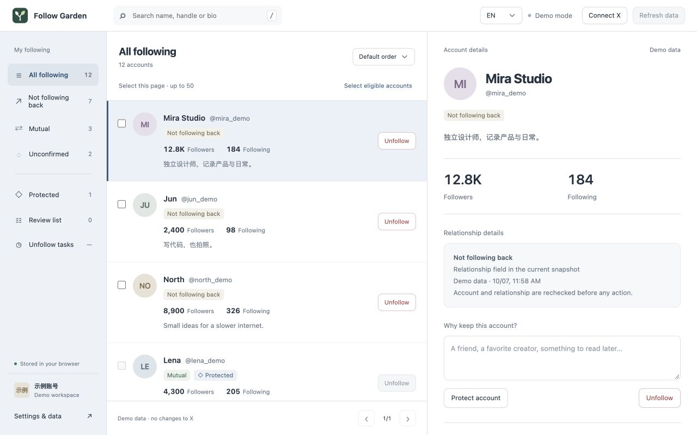

Understand the relationship
Separate mutual follows, one-way follows and unconfirmed relationships. Search names, handles and bios.
YOUR FOLLOWING, WITH INTENTION
See who follows you back. Protect the accounts you love. Make a little room for what comes next.
Add to Chrome ↗Free & open source · Available on Chrome Web Store
Less scrolling.
More considered choices.
Your relationships and profile details, in one place.

Preview uses fictional accounts.
Everything you need to review your following, without a subscription.
Separate mutual follows, one-way follows and unconfirmed relationships. Search names, handles and bios.
Protect important accounts and leave yourself a note. Protected accounts stay out of unfollow tasks.
Unfollow one account or review a selected group. Confirm before acting, pause when needed and see each result.
LOCAL BY DESIGN
Account snapshots, notes and task history stay in your browser. Requests go directly to X. No developer cloud, ads or analytics.
Read the privacy policy ↗